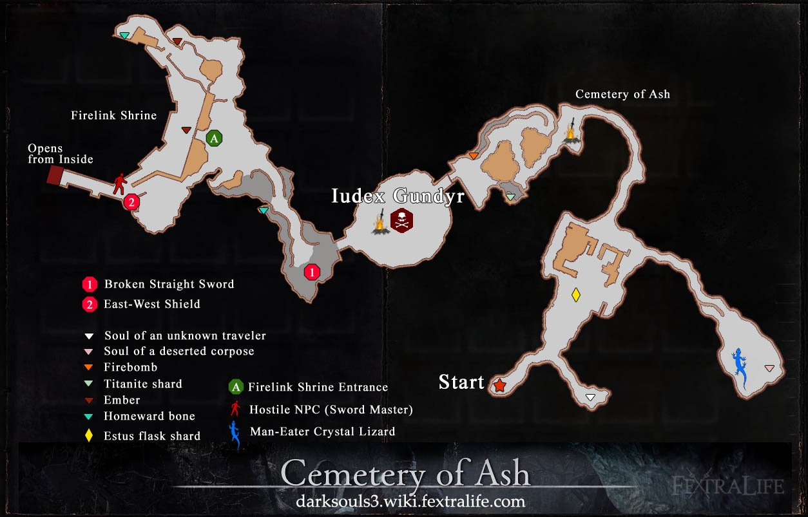

Iudex Gundyr
Santuário do Elo de Fogo
Grande Muralha de Lothric
Vordt do Vale Boreal
Assentamento de Mortos Vivos
Grande Madeira Apodrecida
Estrada dos Sacrifícios
Sábio de Cristal
Forte de Farron
Catedral das Profundezas
Vigilantes do Abismo
Catacumbas de Carthus
Antigo Rei Demônio
Alto Lorde Wolnir
Irithyll do Vale Boreal
Pontífice Sulyvahn
Capital Profanada
Yhorm, o Gigante
Anor Londo
Aldrich, o Devorador de Deuses
Dançarina do Vale Boreal
Oceiros, o Rei Decaído
Campeão Gundyr
Castelo Lothric
Armadura do Matador de Dragões
Grande Biblioteca
Lothric & Lorian
Wyvern Ancião
Pico dos Arquidragões
Rei Sem Nome
Alma das Cinzas
